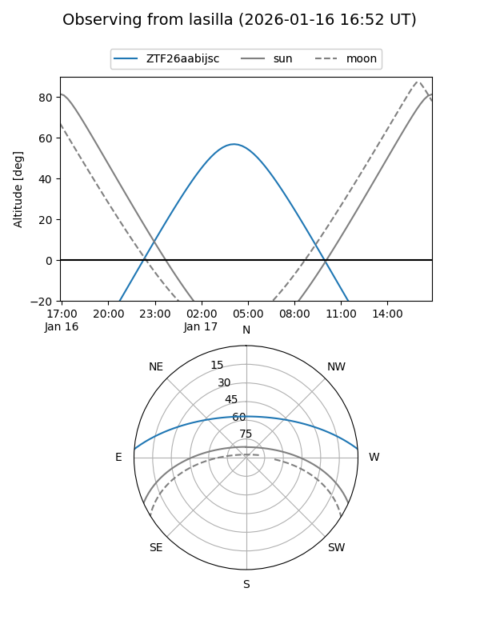
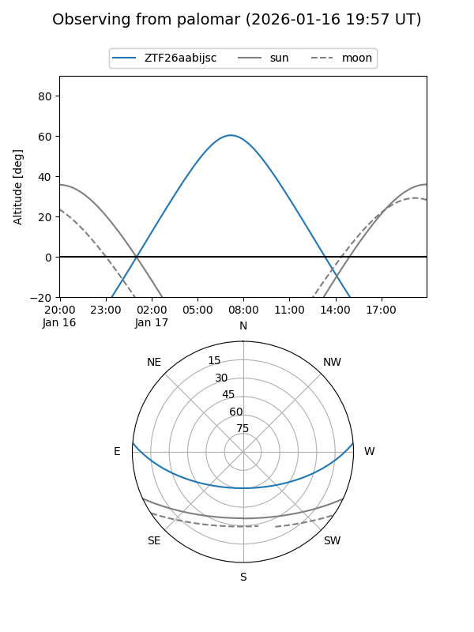
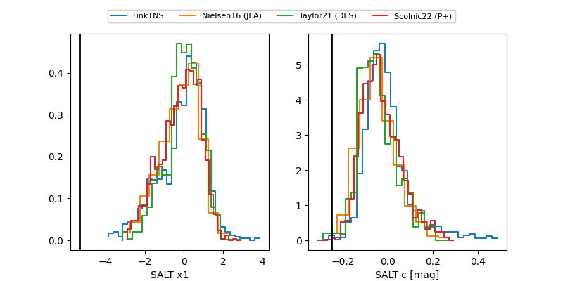

ZTF26aabijsc
Target ZTF26aabijsc at 2026-01-17 12:15
Aliases and brokers:
FINK: link
Lasair: link
ALeRCE: link
alt names
ZTF26aabijsc (ztf,fink_ztf)
Coordinates:
equatorial (ra, dec) = 107.0249,+3.86438
equatorial (HMS+DMS) = 07:08:05.98,+03:51:51.75
galactic (l, b) = (211.3814,+5.46454)
Flags:
Photometry:
last ztfg=19.15, ztfr=18.90
1 ztfg, 1 ztfr detections
Lightcurve

Visibility


Additional plots
